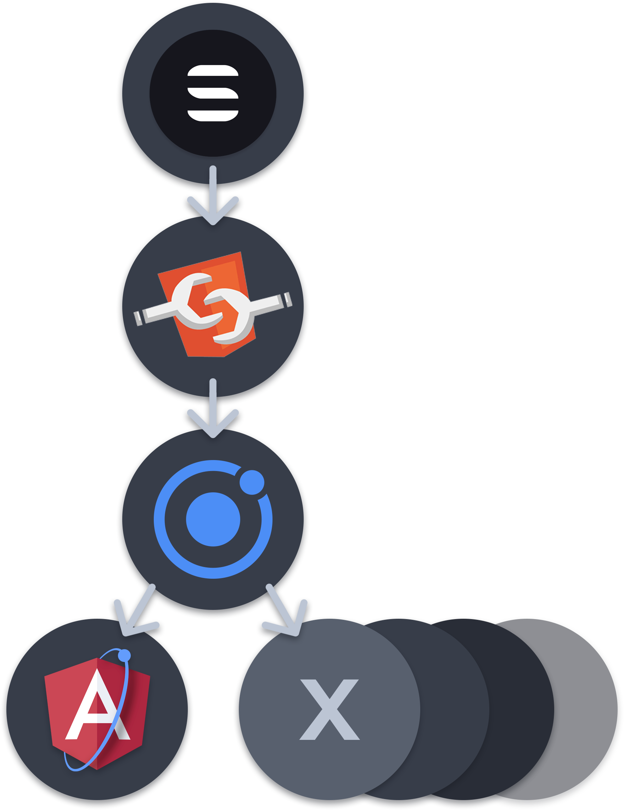
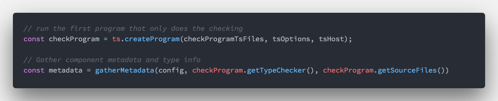
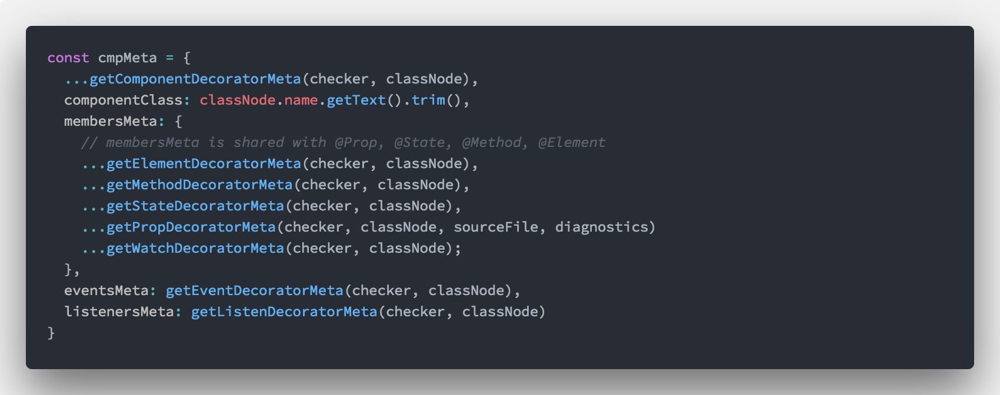

Building StencilJS with TypeScript
About Me
- Senior Developer at Ionic
- One of the creators of StencilJS
I JavaScript
I  TypeScript
I TypeScript
TypeScript
I TypeScript
What is Ionic?
- Cross platform UI kit
- v1 AngularJS / v2 Angular
- TypeScript All the Things

The JS ecosystem is changing
- "What is best framework?"
The JS ecosystem is changing
- "Which framework do you prefer?"
- Components that will work with any framework or with no framework
- Write once use everywhere
Our Answer was Web Components

Why Build StencilJS
- Others could value our abstractions
- Stencil is a 'compiler' that generates Web Components

- Developer Experience and performance
StencilJS
StencilJS
- TypeScript
- Reactive Data-binding
- Async rendering queue
- Virtual DOM
- JSX
StencilJS
- Have excellent developer ergonomics
- Be able to be lazy loaded
- Be able to stand on their own
- Be type safe
- Be as tiny as possible
Stencil Compiler
- We realized that we needed to compile
- TypeScript powers the Stencil Compiler
How the sausage gets made
Metadata Collection


Power of Transforms
Power of Transforms
Power of Transforms
Seamless Upgrades
Docs generation
- Almost free
- Metadata + JSDoc comments becomes docs
We'll do it live.
Next Steps
- More documentation
- Framework Integration Tests